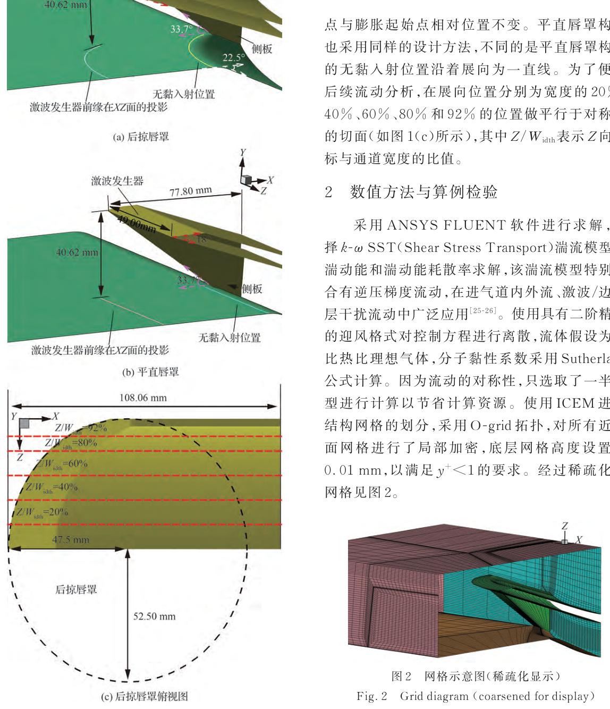
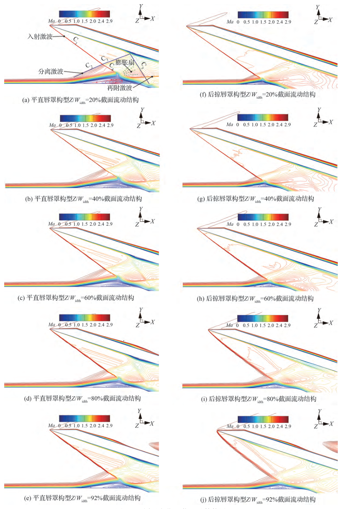
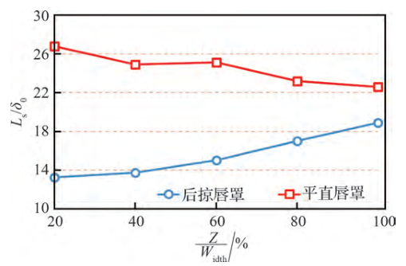
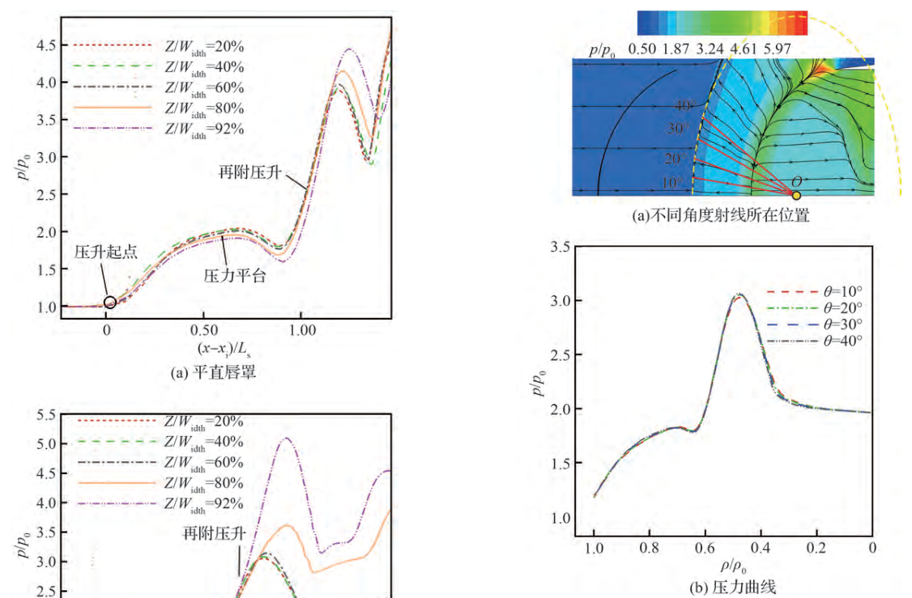

01中文摘要
针对高超声速进气道内强唇罩激波/边界层干扰引起的大尺度分离和流动损失，提出基于后掠唇罩的流动控制方法。在来流马赫3、唇罩压缩角18°条件下，数值对比后掠与平直两类唇罩干扰区流动。后掠唇罩的分离包尺度沿展向逐渐增大，三维后掠入射激波产生自对称面向两侧的顺压梯度，驱动低能流向外迁移，使分离区流向尺度相对平直唇罩最大减小50.6%；后掠唇罩干扰区压力分布呈以分离线曲率中心为虚拟中心的椭圆相似特征。
原始摘要（英文/原文）
针对高超声速进气道内强唇罩激波/边界层干扰带来的大尺度分离、流动损失大等问题，提出了基于后掠唇罩的入射激波/边界层干扰流动控制方法。在来流马赫数3、唇罩压缩角18°条件下，仿真对比了后掠/平直2类唇罩2种构型干扰区内的流动特性。结果表明：后掠唇罩入射激波/边界层干扰产生的分离包尺度沿展向呈现逐渐增加的趋势，利用三维后掠入射激波产生的自对称面往两侧的顺压梯度，驱动低能流往两侧迁移，可使得分离区流向尺度相对于平直唇罩构型最大可减小50.6%；在后掠唇罩干扰区内，压力分布呈现以分离线曲率中心为虚拟中心的椭圆相似特征。
02阅读说明
数值模拟研究（定常RANS/CFD），非实验。材料为《航空学报》2023年44卷16期128091全文13页，含题录、16幅抓图与带页码全文；正文双栏排版，文本层存在串行与公式错位，已按段落语义复原，并用PDF第8页核对式(1)。云图类图件（图8、13、14、16）分辨率与颜色条有限，定量结论以正文数值与图12曲线为准。全文完整无截断；文中未提供本构型实验验证数据与不确定度。 文章类型：期刊
03一句话核心与三句话摘要
马赫3、18°唇罩下，后掠唇罩借展向顺压梯度排移低能流，使分离包最大缩短50.6%，压力呈椭圆相似。
- 高超声速进气道唇罩激波/边界层干扰会诱导大尺度分离和显著流动损失，已有涡流发生器、放气、等离子体等控制手段需付出额外阻力或能量代价，且对唇罩激波与前体发展边界层干扰区近壁结构讨论不足。 AI概括
- 作者在来流马赫数3、唇罩压缩角18°下用k-ω SST定常RANS对比后掠与平直两种唇罩构型，发现后掠构型分离包流向尺寸沿展向增大、相对平直构型最大减小50.6%，再附边界层厚度最多降为84%，总压恢复系数由0.742升至0.768。 原文明确
- 作者据此提出后掠唇罩通过三维入射激波在对称面至两侧形成顺压梯度、排移低能流的控制机理，并报告干扰区壁面压力在以分离线椭圆中心为虚拟中心时具有椭圆相似特征。 AI概括
04核心内容清单
| 要点 | 类型 | 重要性 | 原文依据 | 属性 |
|---|---|---|---|---|
| 提出后掠唇罩构型：唇罩前缘做成1/4椭圆（长半轴52.5 mm、短半轴47.5 mm），使入射激波沿展向后掠，在干扰区制造自对称面向两侧的顺压梯度。 | 控制概念/几何设计 | A | 第2–3页，图1；摘要 | 原文明确 |
| 分离包流向尺寸相对平直唇罩最大减小50.6%，出现在Z/Width=20%靠近对称面处。 | 定量结果 | A | 第7–8页，3.2节，图12 | 原文明确 |
| 后掠构型分离包流向尺寸沿展向增大，平直构型沿展向减小，二者趋势相反。 | 现象 | A | 第5、7–8页，图12 | 原文明确 |
| 再附边界层厚度最多降为原来的84%（Z/Width=20%处由2.2δ0降至1.85δ0）。 | 定量结果 | A | 第5页，3.1节，图9 | 原文明确 |
| 通道出口总压恢复系数由平直唇罩0.742提高到后掠唇罩0.768。 | 性能指标 | A | 第5页，3.1节；第11页结论3 | 原文明确 |
| 后掠唇罩0<Z/Width<50%沿展向为较强顺压梯度；平直唇罩Z/Width<84%沿展向压力上升，不利于低能流侧向排移。 | 机理证据 | A | 第7页，3.2节，图11 | 原文明确 |
| 干扰区壁面压力存在椭圆相似：以分离线所在椭圆几何中心为虚拟中心，沿不同θ角射线提取的压力曲线几乎重合，分离压升与再附压升与角度无关。 | 压力分布规律 | A | 第8页，3.3节，式(1)，图15、图16 | 原文明确 |
| 后掠构型既非柱形相似也非锥形相似，其分离线与再附线基本各为1/4椭圆。 | 流态判据 | B | 第8页，3.3节 | 原文明确 |
| 再附压升：Z/Width=20%–60%后掠约3.0、平直约4.0；Z/Width=92%后掠5.0、平直4.4，说明靠近侧板处后掠构型再附更强。 | 定量结果 | B | 第8页，图14 | 原文明确 |
| 近壁迹线与λ2结构表明后掠构型缩短了分离区内流向螺旋路径、减少被裹挟流体，平直构型0.80 mm（46.0%δ0）迹线几乎不进入分离包。 | 机理证据 | B | 第8–9页，图13 | AI概括 |
| 再附线几乎与无黏激波入射位置重合，两构型均如此，作者据此把再附线当作分离包下游边界。 | 现象 | B | 第5页，图10 | 原文明确 |
| 数值方法用文献[15]尖鳍扫掠干扰算例校验，侧滑角与皮托压吻合较好，但未与本构型实验数据对比。 | 方法可信度 | B | 第4页，图3、图4 | AI概括 |
05引言：研究问题与领域缺口
进气道依靠激波系减速增压，壁面边界层使激波/边界层干扰（SWBLI）不可避免，可诱发分离、卷起旋涡甚至不起动（第1页）。实际飞行器进气道高度三维、展向宽度有限，还叠加后掠压缩拐角与扫掠激波/边界层干扰等复杂三维干扰（第1–2页）。作者综述了Holst与Schmisseur、Vanstone等、Settles与Teng、Kubota与Stollery、Padmanabhan等关于柱形/锥形相似判据的工作，以及涡流发生器、边界层放气、等离子体、展向压力可控前体、唇口剪切/锯齿等控制途径，指出这些方法多需额外阻力或能量，且“对唇罩激波与前体发展而来的边界层干扰区内近壁流体的流动结构讨论较少”（第2页）。因此提出把唇罩设计成三维后掠形，人为构造三维唇罩激波波面，用后掠激波产生的强展向压力梯度驱动近壁低能流侧向迁移以抑制分离（第2页）。适用边界为马赫3、18°压缩角、单构型定常仿真。
06流动条件与几何构型
| 项目 | 数值/描述 | 依据 | 备注 |
|---|---|---|---|
| 来流马赫数 M∞ | 3 | 第4页，第2节；摘要 | |
| 来流总压 | 101.325 kPa | 第4页 | |
| 来流总温 | 300 K | 第4页 | |
| 入口边界层名义厚度 δ0 | 1.74 mm（流速恢复至0.99倍主流速度处的离壁距离） | 第4页 | |
| 唇罩压缩角（激波发生器偏折角） | 18° | 第2页，第1节 | |
| 侧板前缘与来流方向夹角 | 33.7°（略大于激波角，便于低能流从两侧溢出） | 第2页 | |
| 模型尺寸 | 长Lm=77.80 mm，宽Wm=49.00 mm，高Hm=40.62 mm | 第2页 | |
| 肩部膨胀角 | 22.5°，位于无黏激波入射位置下游 | 第2页 | |
| 后掠唇罩前缘型线 | 1/4椭圆，长半轴52.5 mm，短半轴47.5 mm | 第2页 | |
| 平直唇罩无黏入射位置 | 沿展向为一直线（基准构型） | 第3页 | |
| 出口边界 | 出口压力设为来流静压，保证管内通流状态 | 第4页 | |
| 壁面条件 | 所有壁面无滑移、绝热 | 第4页 | |
| 计算域 | 利用对称性取一半模型 | 第3页 | |
| 展向分析切面 | Z/Width=20%、40%、60%、80%、92%（平行于对称面） | 第3页，图1(c) | |
| 再附边界层分析截面 | L=92δ0流向位置 | 第5页，图7 | |
| 近壁迹线起始高度 | 0.01 mm（0.57%δ0）、0.50 mm（28.7%δ0）、0.80 mm（46.0%δ0） | 第8页，图13 |
07核心现象与关键参数
| 参数 | 定义 | 数值 | 关系/说明 | 依据 |
|---|---|---|---|---|
| 分离包流向尺度减小比例 | 相同展向位置后掠相对平直构型的Ls减小量 | 最大50.6%（Z/Width=20%） | Z/Width=20%处差异最显著；后掠随展向增大、平直随展向减小 | 第7–8页，3.2节，图12 |
| 再附边界层厚度 | L=92δ0截面按速度剖面求得的名义厚度δ | Z/Width=20%：平直约2.2δ0，后掠1.85δ0（84%）；Z/Width=60%两者相等 | 后掠在20%、40%、92%均更薄 | 第5页，图9 |
| 通道出口总压恢复系数 σ | 出口总压与入口总压之比（文中未给显式定义式） | 后掠0.768；平直0.742 | 后掠提高约0.026 | 第5页，3.1节 |
| 再附压升 | 再附区壁面压力相对入口静压的无量纲升幅 | Z/Width=20%–60%：后掠约3.0、平直约4.0；Z/Width=92%：后掠5.0、平直4.4 | 靠近侧板后掠再附更强 | 第8页，图14 |
| 展向压力梯度分区 | 沿Z向壁面压力变化趋势 | 后掠0<Z/Width<50%顺压；平直Z/Width<84%压力上升（逆压） | 顺压梯度是低能流侧移的驱动力 | 第7页，图11 |
| 网格量 | 半模结构网格规模 | 200万（粗）、550万（细）、1000万（密） | 三套网格壁面压力差别很小，仅再附压升起止位置略有差异 | 第4页，图5 |
| 近壁网格 | 第一层网格高度与无量纲壁面距离 | 0.01 mm；y+<1 | 满足k-ω SST近壁解析要求 | 第3页 |
| 椭圆极坐标关系 | 长半轴a、短半轴b的椭圆上，极轴角θ对应点到几何中心的距离ρ0 | ρ0²=a²b²/[a²sin²(90°−θ)+b²cos²(90°−θ)] | 用于沿不同角度射线提取壁面压力并检验相似性 | 第8页，式(1)，图15 |
| 分离包流向尺寸图示范围 | 以δ0无量纲化的Ls | 图12纵轴覆盖Ls/δ0约10–30，后掠曲线整体低于平直曲线 | 具体读数受限于图像分辨率，定量以文中50.6%为准 | 第8页，图12 |
08方法与数据
设计后掠与平直两种唇罩构型，均按马赫3、激波发生器偏折角18°设计；侧板前缘与来流夹角33.7°以便低能流从两侧溢出；模型长77.80 mm、宽49.00 mm、高40.62 mm，无黏激波入射位置下游设22.5°肩部膨胀；后掠唇罩前缘为1/4椭圆，长半轴52.5 mm、短半轴47.5 mm，平直唇罩无黏入射位置沿展向为直线（第2–3页，图1）。采用ANSYS FLUENT求解，k-ω SST湍流模型，二阶精度迎风离散，定比热比理想气体，Sutherland分子黏性；利用对称性只算半模；ICEM结构网格、O-grid拓扑、近壁加密，底层0.01 mm满足y+<1（第3页，图2）。来流马赫数3、总压101.325 kPa、总温300 K、入口名义边界层厚度δ0=1.74 mm（流速恢复至0.99倍主流速度处的离壁距离）；出口压力取来流静压以保证通流；所有壁面无滑移绝热（第4页）。以文献[15]直立尖鳍扫掠激波/边界层干扰算例校验，比较10、12、15站位的侧滑角与皮托压（第4页，图3、图4）。网格敏感性用200万、550万、1000万三套网格比较第一个分离包壁面压力（第4页，图5）。收敛判据为出口马赫数与流量基本不变、各项残差下降4个数量级（第4页）。
| 项目 | 内容 | 依据 | 备注 |
|---|---|---|---|
| 研究类型 | 定常RANS数值模拟，两构型对比 | 第3–4页，第2节 | 无本构型实验 |
| 求解器 | ANSYS FLUENT | 第3页 | |
| 湍流模型 | k-ω SST（剪切应力输运），适用于逆压梯度流动 | 第3页 | |
| 空间离散 | 二阶精度迎风格式 | 第3页 | |
| 气体与黏性 | 定比热比理想气体；分子黏性用Sutherland公式 | 第3页 | |
| 网格 | ICEM结构网格，O-grid拓扑，近壁局部加密，底层0.01 mm，y+<1 | 第3页，图2 | |
| 计算域 | 半模（对称面） | 第3页 | |
| 网格敏感性 | 200万/550万/1000万三套，比较第一个分离包壁面压力 | 第4页，图5 | |
| 算例校验 | 文献[15]直立尖鳍扫掠激波/边界层干扰，对比10、12、15站位侧滑角与皮托压（以来流皮托压无量纲化） | 第4页，图3、图4 | |
| 收敛判据 | 出口马赫数与流量基本不变，各项残差下降4个数量级 | 第4页 | |
| 流场诊断 | 马赫数云图、总压云图、壁面极限流线、λ2判据、离壁迹线、壁面压力曲线 | 第5–9页，图6–图16 | |
| 定量口径 | Ls用δ0无量纲；压力用入口静压p0无量纲；边界层厚度取名义厚度δ | 第4–8页 |
09核心推导与公式
本文不是从控制方程推公式，而是从流场观察中提炼几何描述：后掠唇罩干扰区的分离线与再附线近似为1/4椭圆，于是用椭圆极坐标把壁面压力沿不同方向射线无量纲化，检验压力曲线是否重合，从而定义椭圆相似。
关键假设
- 分离线与再附线可分别用1/4椭圆近似（第8页，3.3节）
- 椭圆的几何中心可作为压力分布的虚拟中心（第8页）
- 只在“一定角度范围内”沿射线提取压力时相似性成立，角度范围文中未量化（第8页）
- 流场为定常RANS结果，压力分布取时均值（第3–4页方法）
- 相似性检验针对后掠唇罩构型、单个马赫数与压缩角（第8页）
推导过程
由图10(b)壁面极限流线发现，后掠唇罩分离包的分离线与再附线基本各为1个椭圆的1/4，且不属于文献[5-7]的柱形或锥形相似。
对已知长半轴a、短半轴b的椭圆，把极轴上任意一点到椭圆几何中心的距离定义为ρ；ρ0为椭圆曲线上的对应点到几何中心的距离，θ为极轴与x轴的夹角。
将ρ0用a、b与θ表示，得到椭圆极坐标方程；该式即原文唯一显式公式，用于把壁面压力沿任意角度射线映射到同一径向坐标。
选取分离线所在椭圆为基准构建椭圆极坐标，分别提取4个不同θ角度极轴上的壁面压力，并以入口静压p0无量纲化，绘成压力分布曲线。
不同角度极轴提取的压力曲线几乎重合，即分离压升与再附压升保持一致、与直线所在角度无关；作者据此判定壁面压力存在椭圆相似，虚拟中心为分离线所在椭圆的几何中心。
适用边界：该推导只是几何运动学描述，不含动量/能量方程，不能预测a、b或压力峰值；a、b数值文中未提及；适用θ范围文中仅写“一定角度范围内”，未量化；仅在马赫3、18°、单一后掠型线的定常RANS结果上验证，未做网格/湍流模型敏感性或其他构型外推。
10结果：主要发现与关键证据
平直唇罩各展向切面均出现入射激波C1诱导的分离包、分离激波C2、C2与C1相交后的透射激波C3/C4、C4后匹配压力的膨胀扇以及再附激波；C3在激波发生器内壁诱发小分离并形成反射激波C5，从Z/Width=20%到92%分离区流向尺度不断减小、C5逐渐弱化（第5页，图6）。后掠唇罩流场结构相似但分离区法向尺度明显减小，且沿展向分离区流向尺度略增（第5页）。在L=92δ0截面，平直唇罩Z/Width=20%处再附边界层厚约2.2δ0，后掠构型降至1.85δ0（84%）；Z/Width=40%和92%后掠均明显更薄，60%处两者相等；通道出口总压恢复系数后掠0.768、平直0.742（第5页，图7–图9）。壁面极限流线显示后掠构型分离线后掠程度小于激波发生器前缘型线，再附线几乎与无黏入射位置重合（两构型皆然），后掠分离包流向尺寸近似为平直的一半且流线展向偏折更大（第5页，图10）。展向压力曲线显示平直唇罩Z/Width<84%压力沿展向上升、不利于排移，后掠唇罩0<Z/Width<50%为较强顺压梯度（第7页，图11）。分离包流向尺寸Ls/δ0在后掠构型沿展向增大、平直构型减小，Z/Width=20%处差异最大、减小50.6%（第7–8页，图12）。无量纲壁面压力曲线趋势一致，第1段分离压升后存在局部顺压梯度再接再附压升；Z/Width=20%–60%后掠再附压升约3.0、小于平直约4.0，但92%处后掠达5.0、大于平直4.4（第8页，图14）。离壁0.01 mm（0.57%δ0）、0.50 mm（28.7%δ0）、0.80 mm（46.0%δ0）迹线与λ2判据表明后掠构型近壁螺旋路径更短、裹挟流体更少；平直0.80 mm迹线不参与分离包内耗散（第8–9页，图13）。以分离线所在椭圆构建椭圆极坐标、沿4个θ角射线提取的压力曲线几乎重合，表明一定角度范围内存在椭圆相似，分离压升与再附压升和射线角度无关（第8页，图15、图16，式(1)）。
| 发现 | 证据 | 证据类型 | 强度 | 位置 | 属性 |
|---|---|---|---|---|---|
| 后掠唇罩使分离包流向尺寸相对平直唇罩最大减小50.6%，且减小幅度在靠近对称面（Z/Width=20%）处最大。 | 图12给出两构型Ls/δ0随展向分布，Z/Width=20%处差异最大；正文给出50.6% | 定量对比（CFD） | 强 | 第7–8页，3.2节，图12 | 原文明确 |
| 后掠与平直构型分离包流向尺寸沿展向的变化趋势相反：后掠略增、平直减小。 | 图12两条曲线斜率符号相反；正文明确两构型趋势相反 | 趋势 | 强 | 第7–8页，图12 | 原文明确 |
| 后掠唇罩降低再附边界层厚度，Z/Width=20%处由2.2δ0降至1.85δ0（84%），但在Z/Width=60%处两构型相等。 | 图9边界层厚度随展向分布及正文数值 | 定量对比 | 强 | 第5页，3.1节，图9 | 原文明确 |
| 后掠唇罩提高通道出口总压恢复系数，由0.742升至0.768。 | 正文给出的σ数值 | 性能指标 | 中 | 第5页，3.1节；第11页结论3 | 原文明确 |
| 后掠构型在对称面附近形成较强展向顺压梯度，是其排移低能流的直接原因。 | 图11展向压力曲线：后掠0<Z/Width<50%顺压，平直Z/Width<84%压力上升 | 机理证据 | 强 | 第7页，3.2节，图11 | 原文明确 |
| 后掠唇罩干扰区壁面压力具有椭圆相似特征，分离压升与再附压升不随射线角度改变。 | 图16沿4个θ角射线的无量纲压力曲线几乎重合；式(1)给出椭圆极坐标 | 压力分布规律 | 中 | 第8页，3.3节，式(1)，图16 | 原文明确 |
| 再附压升在Z/Width=20%–60%后掠约3.0、低于平直约4.0，但在Z/Width=92%后掠升至5.0、高于平直4.4。 | 图14不同展向位置壁面压力曲线 | 定量结果 | 中 | 第8页，图14 | 原文明确 |
| 近壁迹线显示后掠构型分离区内流向螺旋路径更短、裹挟流体更少，平直构型分离区气流主要来自0.8 mm以下边界层。 | 图13不同离壁高度迹线及λ2旋涡结构 | 机理证据 | 中 | 第8–9页，图13 | AI概括 |
11机制解释与论证链
前提：把唇罩前缘由展向直线改为后掠1/4椭圆，使入射激波波面三维后掠。证据：图11显示后掠构型0<Z/Width<50%沿展向为较强顺压梯度，而平直构型Z/Width<84%压力沿展向上升；图10显示后掠分离包内壁面极限流线展向偏折更大。推论：该顺压梯度驱动分离包内低能流体自对称面向两侧迁移，减少低能流在干扰区堆积，使分离包流向尺度与法向尺度减小、再附边界层变薄，并降低总压损失。结论：分离包最大缩短50.6%、总压恢复0.742→0.768、再附边界层最薄降至84%（第5–9页）。上述因果链中“顺压梯度→侧向排移→分离减小”为作者明确表述（第7、9页），但排移通量未定量，属AI概括。
12讨论：结论、贡献与局限
作者给出的机理链是：常规展向平直激波发生器改为前缘沿展向后掠的激波发生器，产生后掠入射激波/边界层干扰，在对称面到两侧形成顺压力梯度；该梯度驱使干扰区内低能流自动向两侧迁移，减少进入通道内部低能流流量，从而减小闭式分离尺度并削弱其对进气道性能的负面影响（第9–10页，图17）。近壁迹线分析补充说明后掠构型增加了对近壁低能流的展向排移、减少低能流在干扰区内堆积（第8页）。作者还指出后掠构型既不属于文献[5-7]的柱形相似也不属于锥形相似，而分离线与再附线基本为1/4椭圆，故引入椭圆极坐标描述压力分布（第8页）。工程上建议配合以外锥压缩为基准流场设计的前体，以满足前体激波与后掠唇罩封口要求（第10页）。局限：仅一个马赫数、一个压缩角、一种后掠型线；定常RANS无本构型实验校核（仅用文献尖鳍算例校验数值方法）；椭圆长短半轴与适用角度范围文中未给出；非定常特性与宽速域适用性未讨论。
作者结论
作者结论四条（第10–11页）：1）相对平直唇罩，后掠唇罩的分离激波与再附激波强度明显减弱，经干扰区后再附边界层厚度最多降为原来的84%；2）后掠入射激波在展向形成自对称面向两侧的显著顺压梯度，驱动干扰区低能流向两侧迁移；3）后掠构型分离包流向尺度最大减小50.6%，其沿展向略增而平直构型减小，通道出口总压恢复系数由0.742提高到0.768；4）一定角度范围内后掠唇罩壁面压力存在椭圆相似，虚拟中心为分离线所在椭圆的几何中心，分离压升与再附压升与射线角度无关。
主要贡献
- 提出以后掠唇罩构造三维入射激波、利用展向顺压梯度排移低能流的被动流动控制方法，不引入额外阻力或能量装置。
- 给出后掠/平直唇罩在M3、18°下的定量对比：分离包−50.6%、再附边界层84%、总压恢复0.742→0.768。
- 揭示后掠唇罩干扰区分离线与再附线近似1/4椭圆，并提出用椭圆极坐标描述的椭圆相似压力分布规律。
- 给出可与外锥压缩前体配合封口的工程实现建议（第10页，属设计构想）。
局限与未解决问题
作者明确承认/本文呈现的局限：仅一个来流马赫数（3）、一个唇罩压缩角（18°）、一种后掠前缘型线；仅用文献[15]尖鳍算例校验数值方法，未与本构型实验或更高保真数据对比；定常RANS（k-ω SST），无法给出非定常/低频振荡信息；椭圆相似仅在“一定角度范围内”成立，长短半轴数值与角度范围文中未提及；未讨论侧滑、攻角、宽速域与真实进气道耦合；未给出低能流侧向排移通量的定量核算。
13对高速流动与工程的意义
对高速进气道设计：提供一种不增加附面层抽吸或涡流发生器阻力的被动控制思路——通过唇罩前缘后掠把二维正入射干扰转化为三维后掠干扰，用展向压力梯度把低能流赶向侧板，从源头减小唇罩激波诱导的闭式分离与总压损失（第9–10页）。可借鉴之处包括：以δ0无量纲的分离包长度对比口径、用展向压力曲线判断排移方向、用椭圆极坐标检验三维干扰区压力相似性。不能回答的问题：宽速域/大攻角下的有效性、非定常载荷、与燃烧室/隔离段耦合后的性能收益，均未涉及。对进气道/隔离器的启示属AI推断：该方法把分离控制从局部吹/吸转为全局展向压力整形，可能适用于宽扁进气道唇罩，但需实验验证。
14核心图件




15可引用原文素材
| 原文短句 | 可支持的观点 | 位置 | 使用建议 |
|---|---|---|---|
| “分离包尺度沿展向呈现逐渐增加的趋势” | 后掠构型分离包沿展向增大这一反直觉趋势 | 摘要，第1页 | 可用于对比平直构型趋势，注意不可截断为分离包增大 |
| “分离区流向尺度相对于平直唇罩构型最大可减小50.6%” | 控制效果的核心定量结论 | 摘要，第1页；第7页 | 引用时须注明Z/Width=20%、M3、18° |
| “0<Z/Width<50%范围内沿着展向为较强的顺压力梯度” | 展向排移机理的直接证据 | 第7页，图11 | 适合放入机理段落，需与平直构型Z/Width<84%上升对比 |
| “再附线几乎与无黏入射位置重合” | 分离包下游边界近似为无黏入射位置 | 第5页，图10 | 可用于定义分离包长度口径 |
| “后掠唇罩构型通道出口总压恢复系数σ=0.768” | 性能收益 | 第5页，3.1节 | 与平直0.742成对引用 |
| “不同角度极轴提取的压力曲线几乎重合” | 椭圆相似的判据 | 第8页，图16 | 引用时说明是一定角度范围内 |
| “其再附线近似为一直线” | 平直唇罩分离包具有准二维特征 | 第5页，图10 | 用于对比后掠构型的三维性 |
| “后掠唇罩构型分离包区域的壁面极限流线展向偏折角度较大” | 后掠构型分离包内流动三维性更强 | 第5页，3.2节 | 作为展向排移的流线证据 |
16最终核验
| 核验项 | 结论 |
|---|---|
| 仅基于全文 | 是。仅使用bundle内题录、带页码全文与图注，并用原PDF第8页核对式(1)与椭圆极坐标定义；未引入外部文献结论或数据。 |
| A 级要点有依据 | 是。A级要点（50.6%、84%、0.742/0.768、顺压梯度区间、椭圆相似）均对应摘要、3.1–3.3节及图9、11、12、16的页码。 |
| 属性标注 | 是。原文明确/AI概括/AI推断逐条标注；机理链中排移通量未定量等已注明为AI概括。 |
| 覆盖范围 | 全文13页（含参考文献与英文摘要）已通读；16幅抓图按清单核对；未逐像素读取云图颜色条，图12仅作趋势判断。 |
| 无编造 | 是。未给出的椭圆长短半轴数值、适用角度范围、实验不确定度、非定常频率均写文中未提及/受限于材料；未把图注没有的结论安到图上。 |
需回原文确认
- 分离线/再附线椭圆的a、b数值及一定角度范围的具体角度文中未给出，能否从图16反演？
- 50.6%是在Z/Width=20%处、以Ls/δ0比较得到，其他展向位置的减小比例文中未逐点给出，图12读数需回原文核对。
- 总压恢复系数0.768/0.742的取值截面（通道出口具体位置）与计算方法文中未说明。
- 仅用文献[15]尖鳍算例校验，未见网格无关性之外的数值不确定度（如湍流模型敏感性），结论对k-ω SST的依赖程度不明。
- 后掠前缘1/4椭圆的长短半轴比是否经过优化？改变后掠程度对分离包尺度的影响文中未讨论。
- 非定常特性（分离激波振荡、频谱）在定常RANS中无法体现，真实进气道中该方法是否仍有效？
17关联文献
依据标签、板块、构型与作者脉络自动关联，可据此追踪同一问题的前序与后续工作。
18引用格式
选择期刊风格后复制；出处保留原刊名。BibTeX 可直接用于 LaTeX。
引用格式
李灿民, 黄河峡, 梁钢, 吕靖昊, 蔡佳 & 谭慧俊 2023 基于后掠唇罩的入射激波/边界层干扰流动控制方法. 航空学报 44 (16), 120–132.
PDF上传 PDF 并更新本页
本页缺少全文、摘要或图件时，可在浏览器本地补入 PDF。解析完全在本机完成，不上传网络；完成后会更新本页的 PDF 打开链接、原摘要、IMRaD 机器抽取、关键句与含图页面。复杂的公式语义与中文深度解读仍以原文和既有精读记录为准。